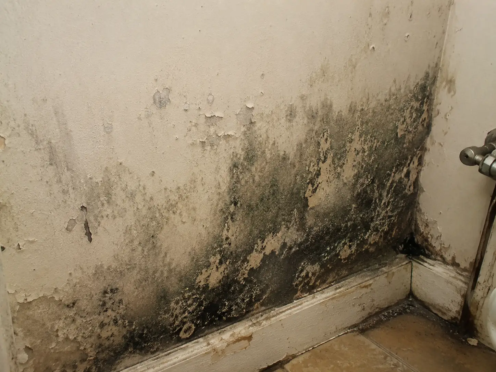

24/7 cleanup, repair & insurance claim support
Water damage restoration in Lehi and across Utah. Fire, smoke and mold too.
Disaster Repair Team does water damage restoration in Lehi, across Northern Utah and in St. George, plus fire, smoke and mold restoration, for homes and businesses. One team from the first call through the rebuild.
- Licensed & insured (B-100)
- IICRC certified
- Target 60-minute response
- 4.9 · 120+ Google reviews
What happened?
What happens with water damage
- 01Emergency Assessment
The team identifies the source, checks safety risks, and determines how far the water has already spread into surrounding materials.
- 02Extraction & Containment
Standing water is removed quickly and the affected areas are stabilized to reduce further saturation and contamination risk.
- 03Drying & Moisture Tracking
Commercial drying equipment, moisture readings, and ongoing checks help ensure hidden moisture is not left behind in walls or floors.
- 04Documentation & Repairs
Photos, readings, and scope notes support the insurance process while the job moves into repair or reconstruction if needed.
What happens with fire damage
- 01Secure The Property
Emergency board-up, tarping, and hazard assessment help protect the structure from weather, theft, and further damage right after the loss.
- 02Document The Damage
Fire, smoke, soot, and water impact are documented clearly so the project scope and insurance conversations can move faster.
- 03Clean, Mitigate, And Stabilize
Debris removal, smoke cleanup, odor control, and drying work help turn the property from crisis mode into a controlled restoration job.
- 04Repair And Rebuild
Because the company also operates as a licensed contractor, the job can move into repair without forcing the customer to start over with someone else.
What happens with smoke damage
- 01Assess Smoke Spread
The team checks how far residue, odor, and air-path contamination have moved through the structure, not just where the fire started.
- 02Stabilize And Isolate
Affected areas are controlled so cleanup can begin without spreading soot and odor deeper into unaffected spaces.
- 03Clean Surfaces And Control Odor
Residue removal, targeted cleaning methods, and odor-treatment strategies help make the property safe and usable again.
- 04Document And Restore
Scope details, content impact, and follow-on repairs are organized so the insurance process and rebuild decisions move more cleanly.
What happens with mold damage
- 01Inspect And Identify The Source
The team looks at visible growth, moisture patterns, and likely hidden problem areas so the job is scoped around the real cause.
- 02Contain The Affected Area
Containment measures help keep spores and debris from spreading into unaffected parts of the property during cleanup.
- 03Remove, Clean, And Treat
Contaminated materials and affected surfaces are handled according to the remediation plan while cleanup focuses on restoring safe use.
- 04Correct Moisture And Restore
Remediation is followed by moisture-control guidance and repair coordination where walls, flooring, or finishes need to be rebuilt.
One team
Fewer handoffs. One line from call to rebuild.
The work centers on stabilizing active damage, documenting the loss, and keeping the project moving toward cleanup, repairs and reconstruction with fewer handoffs. Because the company is also a licensed general contractor, cleanup does not have to stop where reconstruction starts.
- Immediate triage
- On-site stabilization
- Insurance & scope
- Repair & rebuild
- Immediate triage
- On-site stabilization
- Insurance & scope
- Repair & rebuild
Specialty services
Some losses need more than mitigation.
 Water damageMitigation, extraction, drying and repair coordination for leaks, floods, plumbing failures and storm water.
Fire damageCleanup, smoke remediation, documentation and rebuild support.
Water damageMitigation, extraction, drying and repair coordination for leaks, floods, plumbing failures and storm water.
Fire damageCleanup, smoke remediation, documentation and rebuild support.

MoldInspection, containment, remediation and moisture-source correction. Sewage backup cleanupSafer handling and cleanup for sewage backups, drain overflows and contaminated water. Foundation crack & leak repairWall cracks, seepage and water intrusion, with honest guidance when a structural evaluation is needed. InsulationIn-house insulation removal and replacement after a loss. Commercial restorationFast response and clear coordination for occupied office, retail, industrial and apartment properties.Extraction alone is not the finish line.
Proudly serving Northern & Southern Utah
Two numbers. Northern Utah and St. George.
Salt Lake, Utah, Davis, Weber, Box Elder, Summit, Tooele, Wasatch and Juab counties.
Washington and Iron counties, including St. George and Cedar City.
Questions
Good to know.
01Do you work with insurance?
Yes. Damage is documented clearly, with photos, readings and scope notes, so the job can move forward with stronger claim support and fewer communication gaps. Coverage decisions are your insurer’s.
02How fast can you get here?
The target is a 60-minute on-site response for emergencies, available 24/7. For active damage, calling is the fastest option.
03Can you do the repairs, or just the cleanup?
Both. Because the company is also a licensed B-100 general contractor, cleanup does not have to stop where reconstruction starts.
04Do you cover St. George?
Yes. Northern Utah is 385-287-6344; Southern Utah (St. George) is 435-619-9594.
Active damage? Calling is still the fastest option: 385-287-6344.
Request Help
Active damage? Call now. It’s the fastest way.
Available 24/7 for Northern Utah and St. George. For contained damage, callbacks and estimates, send a request and the team will follow up as quickly as possible.
Request Help